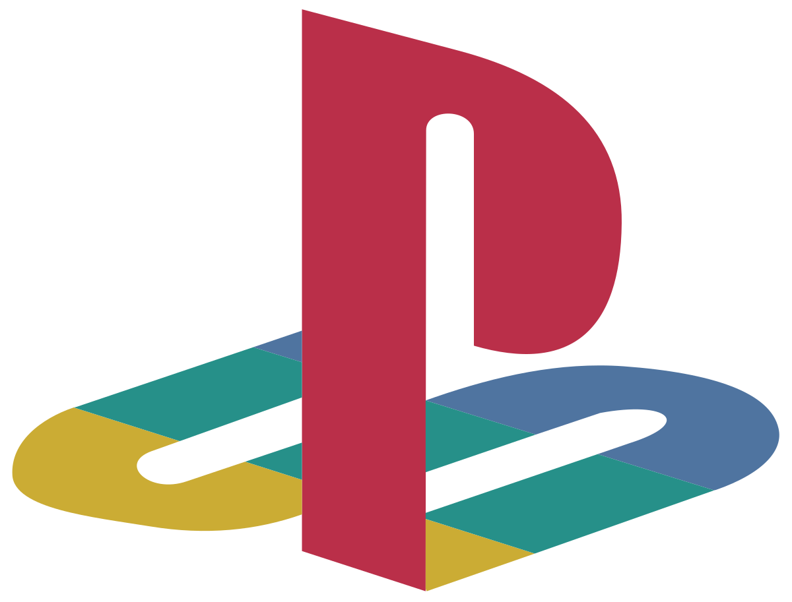

PS1
Főoldal
(current)
A rajt
A PS1-ről
Felépítés
Beüzemelés
PS1 CD-k
Modchipek
PAL vs NTSC
Modellek
Hibajelenségek
CD fajták
Játékok

A rajt
„A PlayStation 1 a rajtvonalról robban: Felemelő indulás
a játékok világába, ahol az élmény sosem áll meg‟
Mutass többet
A rajt
A rajt
Japánban igazán lelkesen fogadták a
SONY úttörő konzolját
, mellyel belépett a konzolpiacra
Egyszerre verte meg a SEGA, és a Nintendo konzoljait
(NES, SNES, SEGA megadrive...)
Az első napokban is több, mint
30 ezer eladás
sal büszkélkedhetett
A 80-as, és 90-es években a videojáték ipar virágzott
De ezek még csak kezdetlegesnek nevezhetők az itt látható konzolhoz képest
Mivel ekkoriban még csak 2 dimenziós játékokkal lehetett játszani
Viszont 1994-ben csoda történt
A SONY piacra dobta az első videojáték konzolját, a PlayStationt
Ez szakított a hagyományokkal, több dologban is egyszerre
Elsőként számolt le a játékkazettákkal, a helyüket átvették a CD-k
Ez a konzol
3 dimenziós
játékok futtatására is képes volt
Japánban adták ki először
, de később Európában, és Amerikában is megjelent
Eszméletlenül sikeres konzol volt, és minden eladási rekordot megdöntött
A siker titka kettő dologban rejlett:
CD-ROM technológia és 3D játékok futtatása
Összesen több, mint ezer játékot adtak ki rá
Többek között olyan klasszikusokat, mint a
Crash Bandicoot
trilógia,
Gran Turismo
Igazán sok exklúzív játék a PlayStation-ön látott napvilágot